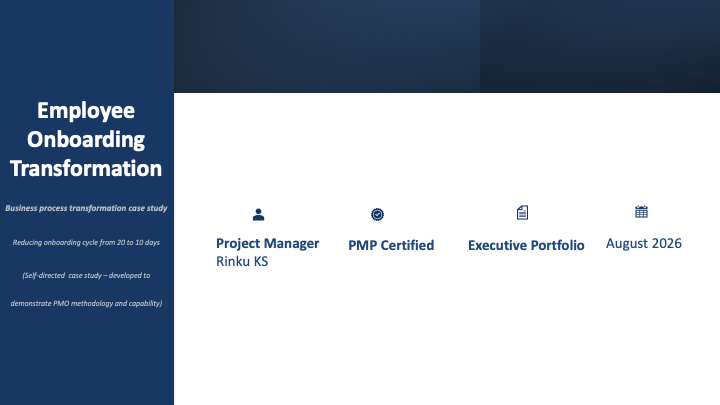

Business Transformation • PMO • Governance • Process Improvement

Developed an executive project portfolio demonstrating the end-to-end redesign of an employee onboarding process. The illustrative case study showcases business analysis, stakeholder engagement, governance, implementation planning, project controls, and business outcomes using established project management practices.